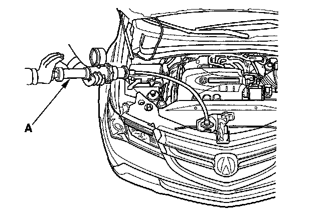

Radiator: Testing and Inspection
Radiator Test1. Wait until the engine is cool, then carefully remove the radiator cap, and fill the radiator with engine coolant to the top of the filler neck.
2. Attach a commercially available pressure tester (A) to the radiator, and apply a pressure of 93-123 kPa (0.95-1.25 kgf/cm2, 14-18 psi).

3. Inspect for engine coolant leaks and a drop in pressure.
4. Remove the tester, then reinstall the radiator cap.